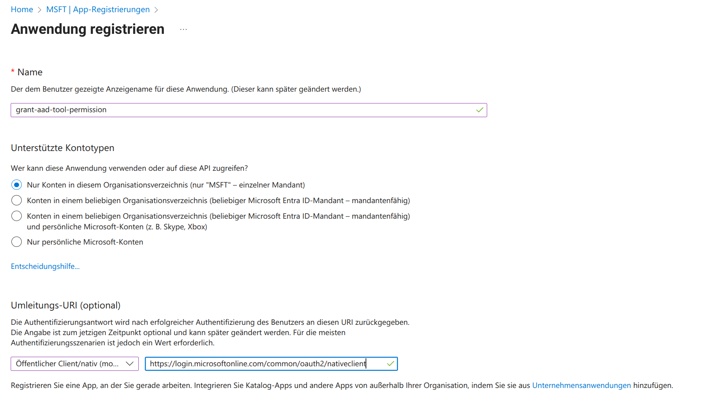
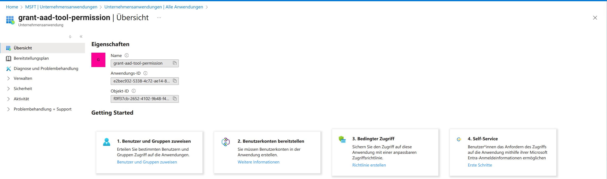
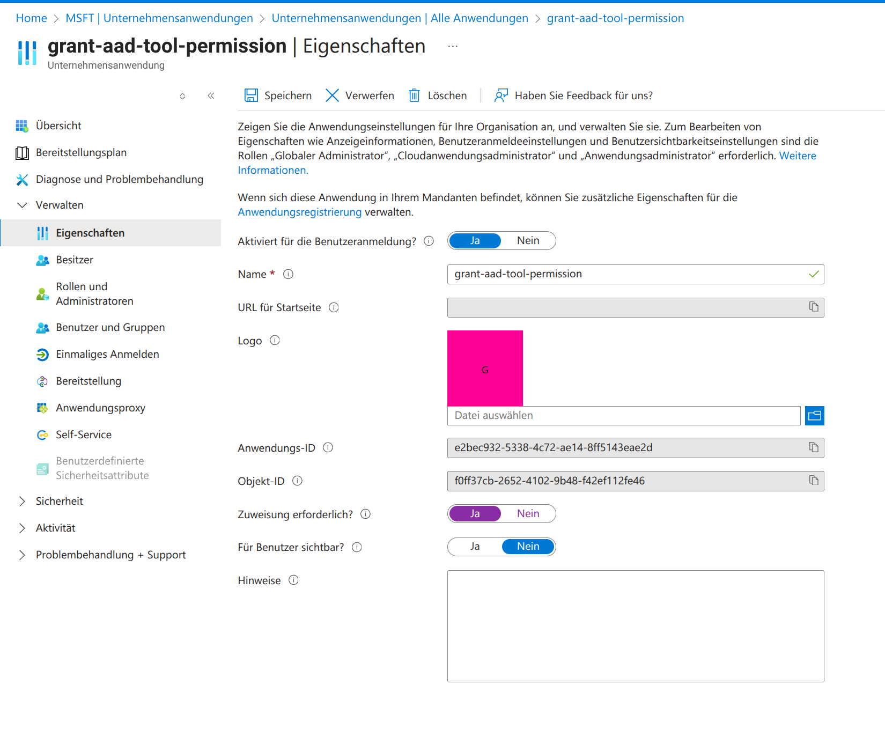
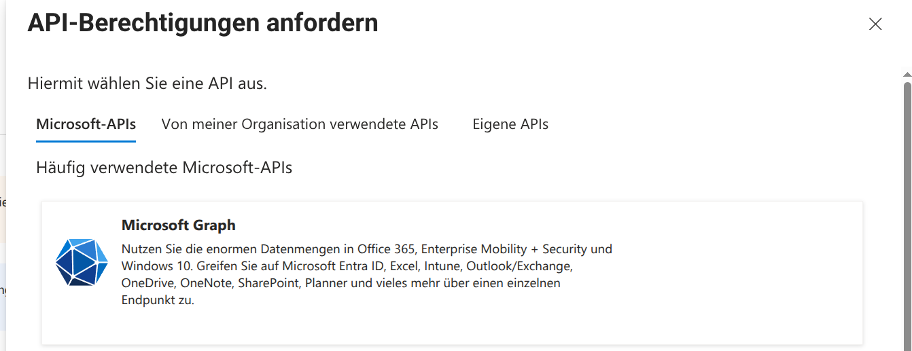
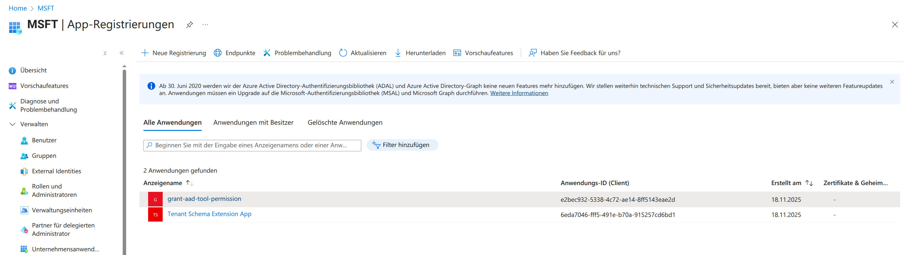
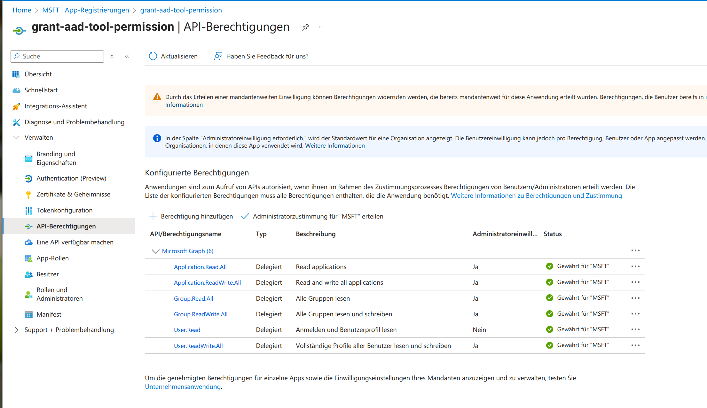

RFC2307 Schema Attributes
by Stefan Kania
There are no attributes in the user and group objects of Entra ID that define a Unix user or a Unix group. These attributes are not provided by Entra ID. However, if the attributes such as uidNumber or gidNumber of a user or group from Entra ID are to be assigned fixed values, Entra ID must be extended with the corresponding schema. The Linux systems must then be authorized to read these new attributes. These attributes can also be synced from an on-prem Active Directory. It is therefore not only necessary to set up an extension of the Entra ID tenant, but all hosts must also be granted read permission.
When is this necessary or useful?
Whenever a local domain has been converted to Entra ID and the Linux systems have been assigned user information such as gidNumber and uidNumber via Winbind. In this case, the uidNumber and gidNumber should be taken from the local Active Directory if possible. Or, when setting up Entra ID for the first time, all Linux users and groups should be directly assigned the POSIX attributes.
However, it is not the case that users and groups from Entra ID do not receive a uidNumber and gidNumber. By default, the uidNumber and gidNumber are assigned by Himmelblau via the UPN name of the authenticating user. This may seem unusual, but in Entra ID, the UPN is the only attribute whose validity can be queried during the first authentication, i.e., when the client joins the domain. At this point, it is not possible to query further user attributes.
This behavior differs significantly from the behavior of a local Active Directory. In Active Directory, the host first joins the domain. The resulting host credentials enable directory queries for user and group attributes, including the SID of the objects. This is not permitted in Entra ID. After the client joins, the client still does not have permission to perform attribute queries for users or groups.
But what happens with all subsequent authentications?
Once the client is connected, the protocol allows both the UPN and the object ID of each authenticating user to be verified. In Windows Active Directory, the attribute is called the SID. In Entra ID, it is referred to as the object ID. However, both represent the same identity attribute. For this reason, a UPN-based mapping is always required first. This is why the SID and object ID are only available after the client has joined the Entra ID domain.
As already described in the first part of the documentation, ID mapping is defined using the two options id_attr_map and idmap_range in the configuration file /etc/himmelblau/himmelblau.conf. The option id_attr_map can be compared to the option idmap config * : \<backend> in smb.conf. The idmap_range option can be compared to the idmap config * : \<range> option.
The default value for id_attr_map is the UPN of the object. Other possible options are UUID or rfc2307. To use the rfc2307 option, it is necessary to extend the schema.
The default value for idmap_range is 5000000-5999999.
But where do the default values come from when the UPN of the user is used as id_attr_map? In Active Directory, together with Winbind, the RID is used as a factor. In Himmelblau, the mapping function of sssd is used to determine the uidNumber or gidNumber. The UPN is converted into a numerical value using murmurhash3.
If the range is changed, it is first necessary to clear the cache for the ID mapping and then restart the Himmelblau services. The following listing shows the required commands:
root@skyblue:~# aad-tool cache-clear --full
This will unjoin the host, clear all caches, and cannot be undone.
Proceed? \[Y/N\]: y
success
root@skyblue:~# systemctl restart himmelblaud.service
himmelblaud-tasks.service
As can be seen in the listing, the client is removed from the domain and must then be re-added.
However, this is not sufficient to assign your own values for the POSIX attributes; a schema extension is required for this. The schema extension itself can be set up via the command line of a client integrated into the domain. However, in order to set up the extension, additional permissions are required in Entra ID. Permissions are assigned via independent applications that are set up in the Entra ID portal.
Creating the applications:
After logging into the portal, click on App Registration and then on New Registration. The following figure shows the values entered:

You can choose any name for the application. When selecting the "Supported account types," it is essential to ensure that the option "Only accounts in this organizational unit..." is selected. An incorrect selection could result in the application being visible and usable by all Entra ID users.
The "Redirect URI" is still missing. Here, select "Public client/native...". The URL must be https://login.microsoftonline.com/common/oauth2/nativeclient.
After clicking on Register, an overview of all currently available applications is displayed.

You can then return to the main menu and click on the Enterprise Applications menu item on the left-hand side. This will display an overview of all currently available applications. Clicking on the newly created application will display the content shown in the following figure:

Clicking on Properties under the heading Manage displays the settings options for the application. It is essential that the item "Assignment required" is set to "Yes." The following illustration shows the change:

Without this change, any user could use the application later. However, the application should only be available to administrators. Next, click on Users and Groups to select the authorized users or groups. Now click on Add Users/Groups. The display that appears is initially empty. Only after clicking on None selected on the left side under the heading "Users and Groups" will an overview of all existing users and groups be displayed. Here, you can now select multiple users and/or groups that should later have access to the application. The following illustration shows the selection:

Now there is an application that can only be used by selected users or groups, but which does not yet have any permissions. Each authorized user should be able to read and write the POSIX attributes later. This requires the appropriate permissions in "Microsoft Graph." "Microsoft Graph" is comparable to an LDAP. Basically, all that is happening here is the assignment of ACLs for access to an LDAP. The assignment of permissions follows in the next steps.
To assign permissions, select the new application again under the main menu item "App Registration." Clicking on API Permissions will bring up an overview of all permissions assigned to the application. This list is currently empty. Clicking on Add Permission will open a new window on the right-hand side. Select the top item, Microsoft Graph:

A new window appears in which you then click on Delegated Permissions. In the following window from the image below:

Now select the following three permissions using the "Select permission" search:
-
Application.Read.All
-
Application.ReadWrite.All
-
User.Read
After confirming all permissions, the window with the overview of all permissions reappears. However, the status of the permissions is still marked with a yellow exclamation mark. All permissions must first be confirmed before they take effect. To confirm the new permissions, click on Grant administrator approval for ...
The following figure shows the result of the customized application permission:

Only now can a second application be created, which then extends the schema with the rfc2307 attributes. The second application is now created via the command line of a Linux client that is already a member of the domain. All of the following commands are always executed as the root user.
The schema extension is also entered via an application. Since certain users or groups have already been granted permission to create applications, the additional application can now be created using one of the users in Entra ID. The following listing shows how to create the application:
root@skyblue:~# aad-tool application create --client-id
e2bec932-5338-4c72-ae14-8ff5143eae2d --name
stkania@0pndv.onmicrosoft.com --
display-name "Tenant Schema Extension App" --user-read-write
--group-read-write
stkania@0pndv.onmicrosoft.com password:
Open your Authenticator app, and enter the number '45' to sign in.
The --client-id option is the application ID for the application used to access Microsoft Graph.
The --name option is used to enter one of the authorized users who is permitted to use the application, along with their full UPN.
The --display-name option assigns the name for the new application. Although the name can be freely chosen, the Microsoft default here is Tenant Schema Extension App.
The --user-read-write and --group-read-write options assign the required permissions:
-
Group.ReadWrite.All
-
User.ReadWrite.All
After the command has been executed without errors, the application is now displayed in the portal in the "App Registration" overview, as shown in the following figure:

Only now can all configured applications be listed on the command line of the Linux client. The following listing shows all applications
root@himmelblau:~# aad-tool application list --client-id
e2bec932-5338-4c72-ae14-8ff5143eae2d --name
stkania@0pndv.onmicrosoft.com
stkania@0pndv.onmicrosoft.com password:
Open your Authenticator app, and enter the number '70' to sign in.
{
"value": \[
{
"id": "8df2811d-486b-4ee0-9bf7-8103ad5449af",
"appId": "e2bec932-5338-4c72-ae14-8ff5143eae2d",
"displayName": "grant-aad-tool-permission"
},
{
"id": "f8fb9572-be58-48a9-9384-d8fc0308b740",
"appId": "6eda7046-fff5-491e-b70a-915257cd6bd1",
"displayName": "Tenant Schema Extension App"
}
\]
}
The schema cannot be extended without listing the applications. The ID of the "Tenant Schema Extension App" application is required to extend the schema.
Now the schema is extended. The following listing shows the required command:
root@skyblue:~# aad-tool application add-schema-extensions --client-id
e2bec932-5338-4c72-ae14-8ff5143eae2d --name stkania@0pndv.onm
icrosoft.com --schema-app-object-id
f8fb9572-be58-48a9-9384-d8fc0308b740
stkania@0pndv.onmicrosoft.com password:
Open your Authenticator app, and enter the number '87' to sign in.
The --schema-app-object-id option is the ID of the "Tenant Schema Extension App."
Once all permissions have been set, the POSIX attributes for groups and users can now be set. The following examples show the extension for a group and then the extension for a user. It is noticeable that the object ID is used for the group and not the name of the group. The reason for this is that there is no UPN for groups, so it could happen that the same group name is used in different domains of a tenant. For users, the UPN can be specified, which is unique throughout the tenant.
In order to be able to assign a gidNumber to a user, the example first extends a group with the gidNumber. Then, in the second command, the user can be assigned a uidNumber and the gidNumber.
root@himmelblau:~# aad-tool group set-posix-attrs --schema-client-id
6eda7046-fff5-491e-b70a-915257cd6bd1 --name stkania@0pndv.onmicros
oft.com --group-id bb845f7f-8f6a-4101-b4c7-8db3cb94c9e6 --gid 23456
stkania@0pndv.onmicrosoft.com password:
Open your Authenticator app, and enter the number '13' to sign in.
root@himmelblau:~# aad-tool user set-posix-attrs --schema-client-id
6eda7046-fff5-491e-b70a-915257cd6bd1 --name stkania@0pndv.onmicroso
ft.com --user-id stkania@0pndv.onmicrosoft.com --uid 12345 --gid 23456
stkania@0pndv.onmicrosoft.com password:
Open your Authenticator app, and enter the number '64' to sign in.
This time, the --schema-client-id option is the appId of the "Tenant Schema Extension App" application.
Now you need to adjust the configuration. To do this, add the following line to the file /etc/himmelblau/himmelblau.conf:
id_attr_map = rfc2307
Afterwards, the cache must be cleared and the services restarted.
root@skyblue:~# aad-tool cache-clear --full
This will unjoin the host, clear all caches, and cannot be undone.
Proceed? \[Y/N\]: y
success
root@skyblue:~# systemctl restart himmelblaud.service
himmelblaud-tasks.service
Since the new attributes cannot be read directly during the first login, joining the domain is not possible by logging in as a user, but must be done via a local user. The local user uses the command aad-tool auth-test together with a user ID from the domain, specifically with a user who has been granted the appropriate permissions to write to Microsoft Graph.
The following listing shows how to join the domain using a local account.
**stka@himmelblau**:**~**\$ aad-tool auth-test --name stkania
Use the password for your Office 365 or Microsoft online login.
Entra Id Password:
Open your Authenticator app, and enter the number '37' to sign in.
No push? Check your mobile device's internet connection.
Set up a PIN
A Hello PIN is a fast, secure way to sign in to your device, apps, and
services.
The minimum PIN length is 6 characters.
New PIN:
Set up a PIN
A Hello PIN is a fast, secure way to sign in to your device, apps, and
services.
The minimum PIN length is 6 characters.
Confirm PIN:
Enrolling the Hello PIN. Please wait...
Only now can the new attributes be displayed and used, as shown in the following listing:
**stka@himmelblau**:**~**\$ getent passwd stkania
stkania:x:12345:23456:stkania:/home/stkania:/bin/bash
The new attributes can also be found via the "Microsoft Graph Explorer." But first, it is necessary to adjust the permissions for the application grant-aad-tool-permission as shown in the following figure:

Now the attributes can also be displayed in Explorer. The URL for Explorer is https://developer.microsoft.com/en-us/graph/graph-explorer. The following figure shows the new attributes of the user: